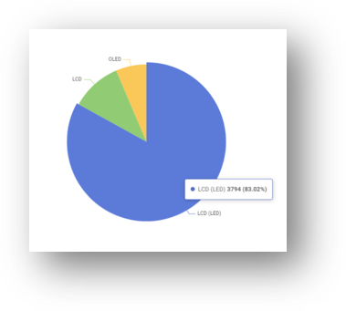
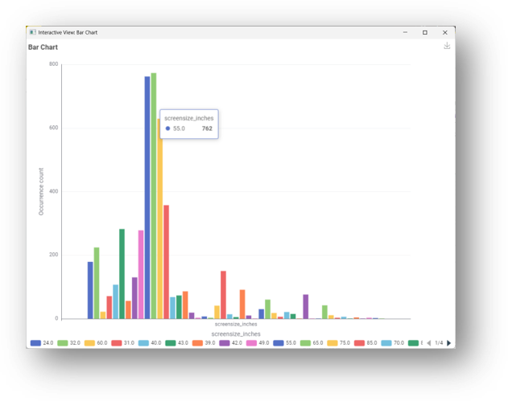
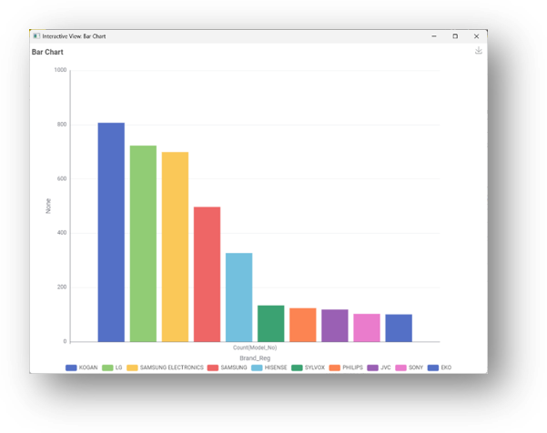
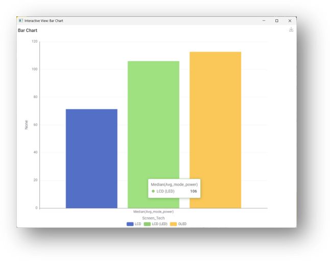
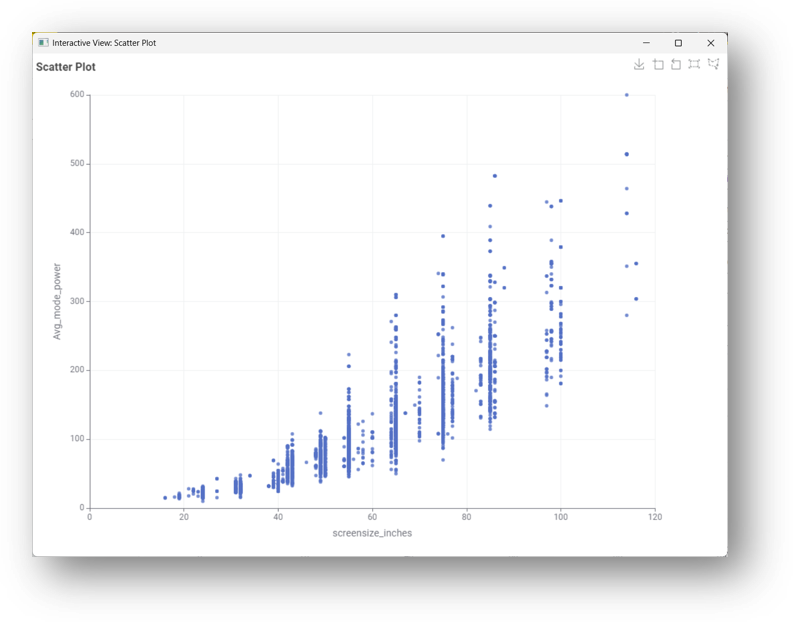
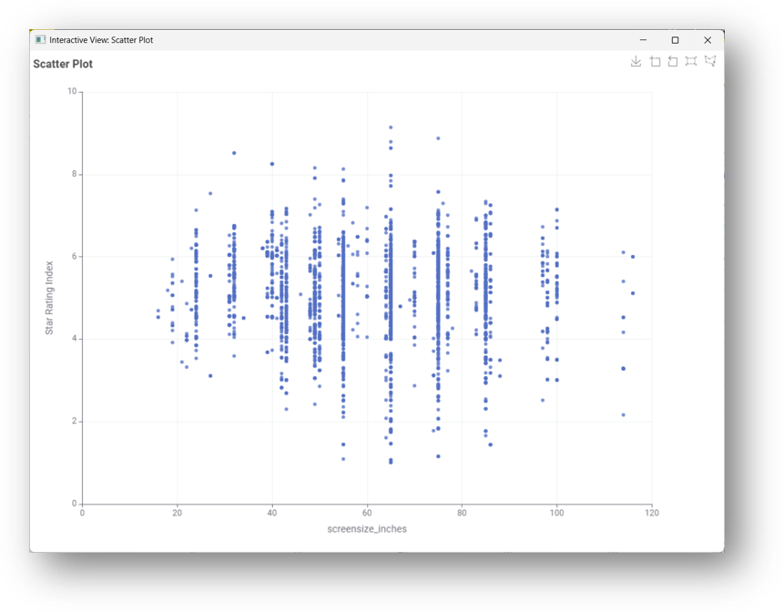

AUSTRALIAN MARKET
Appliance Energy Consumption
Explore how household appliances use electricity and learn about energy consumption in Australian homes.
Energy Matters
Understanding appliance energy consumption can help households make more energy-efficient choices.
Appliance Energy Consumption
Household appliances contribute to electricity use. Factors such as appliance type, power rating and hours of use can affect overall energy consumption.
⚡ Power Usage
Appliances with higher power ratings generally use more electricity when operating.
💡 Energy Efficiency
Energy-efficient appliances can help reduce electricity consumption over time.
🏠 Australian Homes
Understanding household energy use can help consumers make informed appliance choices.
AUSTRALIAN TELEVISION MARKET
Television Energy Insights
Explore insights from an Australian Government dataset on television energy use. These findings help consumers understand TV technologies, screen sizes, brands and energy consumption when choosing a television.
TV Energy Insights
Simple visual information to help Australian consumers make smarter TV choices.
OUR AUDIENCE
Who is this information for?
Australian Consumers
Australian consumers who are interested in buying a new television.
Energy-Conscious Buyers
Consumers looking for affordable, energy-efficient and good-sized TVs.
Simple Visual Insights
Users who prefer simple visual information rather than technical details.
DATA STORY
TV Energy Insights
The charts below present findings from an Australian Government dataset on television energy use.
QUESTION 1
What TV screen technologies are available?

Most TVs in Australia are LCD LED, while OLED is less common.
QUESTION 2
What screen sizes are most common?

65-inch is the most common size, followed by mid-range sizes around 42–55 inches.
QUESTION 3
Which brands dominate the market?

Kogan, LG, and Samsung dominate the market with the largest number of models.
QUESTION 4
Which screen types use the least power?

LCD TVs consume the least power, while OLED uses slightly more.
QUESTION 5
How does screen size affect power use?

Larger TVs use more power.
QUESTION 6
Do larger TVs mean worse star ratings?

Star ratings are fairly distributed; bigger TVs can still be efficient.
CONCLUSION
Making a smarter TV choice
When choosing a TV, balance size, brand, and efficiency. A 55-inch LED TV is common and energy-smart.
BUYING TIPS
Things to consider when choosing a TV
Consider screen size
Choose a screen size that suits your viewing space and personal needs.
Compare energy use
Consider energy consumption when comparing different television technologies.
Compare different brands
Compare brands, technologies and models before making your final choice.
ABOUT THE PROJECT
About Us
This website was developed as part of COS30045 to demonstrate the use of HTML, CSS, JavaScript and GitHub.
Our Website
The purpose of this website is to provide a simple demonstration of appliance energy consumption in the Australian market.
The website provides information about television energy use and presents data visualisations to help users understand different TV technologies, sizes, brands and energy consumption.